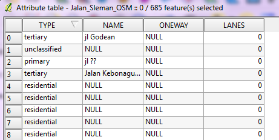
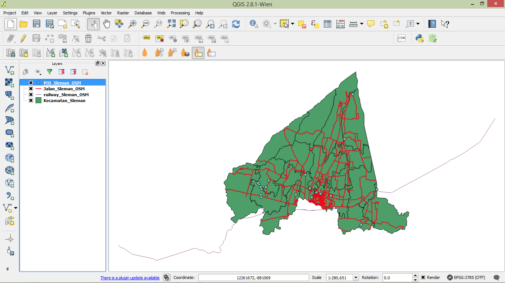
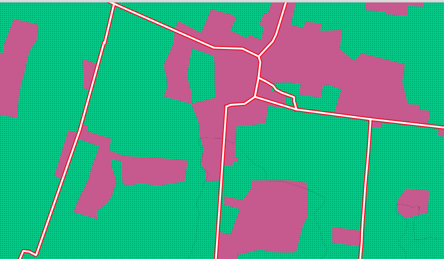
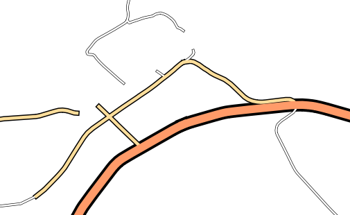
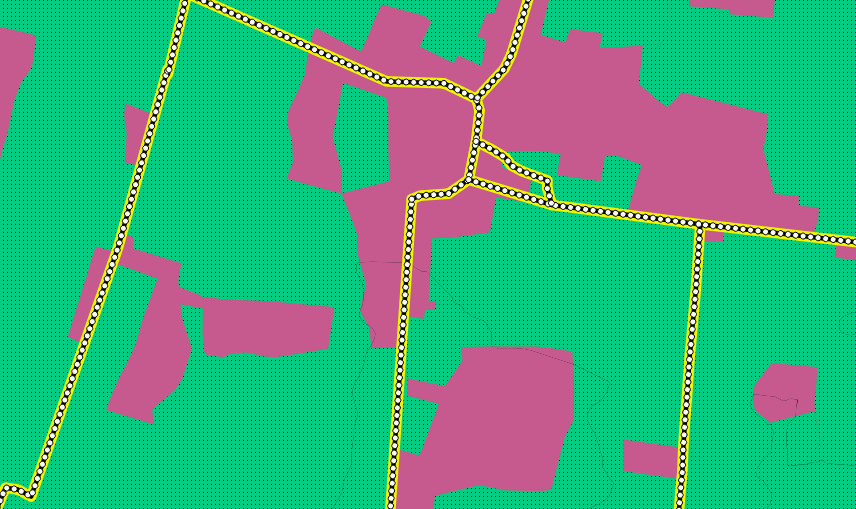
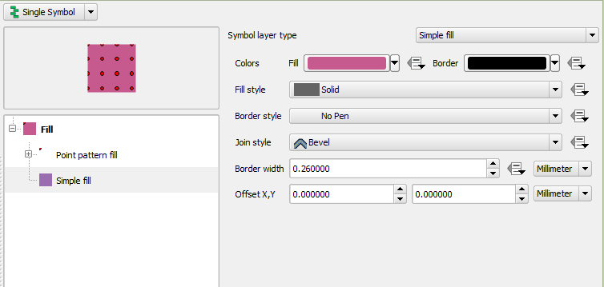

Module 6: Working with Vector Data¶
Learning Objectives
Understand vector data
Identify attributes of vector data
Add vector layers
Symbolise vector layers
In this module, we will learn what is meant by vector data. We will practise adding it to our QGIS projects, and we will learn how to style the data in different ways.
1. Vector data¶
Vector data is the most common type of data found in GIS. A vector is essentially something made up of single points, or lines connecting those points. In other words, points, lines and polygons are all vectors (curved lines are vectors too, but we won’t worry about that for now). We are already quite familiar with vector data because in the previous unit, we used JOSM to create it!
Each object in a vector dataset is referred to as a feature. In JOSM we often refer to them as objects, but in traditional GIS terminology they are features. A polygon that represents a building is a feature, as is a line that represents a river. Each feature has a geographic location and is attached to other data that describe the feature.
One important thing to note is that QGIS layers can only contain one type of feature. That is, one layer can’t contain both point features and line features, because they are different types of data. Hence if you have a file that contains school polygons and another file that contains school points, you would add them as two separate layers.
Almost always, polygon layers will be at the bottom of your layers list, line layers in the middle and point layers at the top. You don’t generally want your polygons overlapping your lines and points.
2. Attribute data¶
It’s important to know that the data you will be working with does not only represent where objects are in space, but also tells you what those objects are.
Open the project
sleman_2_5.qgs. This is the same project that you worked with previously.
In the project we see the position of Sleman districts, the railway, and some roads, but we can’t see all of the data contained in those layers.
Select Jalan_Sleman_OSM in the Layers panel.
Click the Open Attribute Table button:

You will see a table with more data about the streets layer. This extra data is called attribute data. The lines that you can see on your map, which represent the location of the streets is called spatial data. Remember in JOSM there was the same division. The points, lines and shapes we draw tell us where, but the tags, or attributes, tell us what. These definitions are commonly used in GIS, so it’s essential to remember them!
Take a look at the attribute table. Each row in the table is associated with one feature in the streets layer. Each column contains one of the attributes. If you select other layers and click on the Open Attribute Table button, you’ll see different tables.
Close the attribute table.
3. Adding vector data¶
3.1 Shapefiles¶
You’ve already added vector data to a project in the form of a shapefile.
As we mentioned previously, a shapefile is a commonly used geographic file
format.
It can easily be converted into other formats, and most GIS software can read
this type of file.
You may notice when adding a shapefile that there are numerous files in your
shapefile directory with the same name.
This is because a shapefile actually relies on a collection of several other
files to store the data and keep various settings.
When you add a shapefile to your project, you should always add the one that
ends in .shp, but the rest of the files are important too!
Do you remember how to add a shapefile to a project? Try adding the layer
POI_Sleman_OSM, from the shapefile located in the tutorial directory. If you don’t remember how to add a new vector layer, refer to the instructions module 3.
Your project should look like this after the new layer has been added:
3.2 Databases¶
Shapefiles (and other types of files) are one way to store geographic data. You can also load a vector layer into QGIS from a database. You may already be familiar with Database Management Systems (DBMS) such as Microsoft Access. GIS applications also make use of databases to store geographic data. Databases can be hosted and used locally on your computer, or could be shared between users over a network or the internet.
Let’s try adding a layer from a database. Click the Add SpatiaLite Layer button. If you can’t find it, right-click on the toolbar and make sure that the Manage Layers toolbar is enabled.
You will see a dialog box. Click New.
Navigate to the
qgis_data/Sleman/folder and findguna_lahan.db. Select the file and click Open.Now in the original dialog box, notice that the drop-down button contains “guna_lahan.db @ …”, followed by the path of the database file on your computer.
Click Connect. You will see the following in the box:
This database actually has three different layers available, all saved in the database. Click on the first layer to select it, then hold SHIFT and click the last layer to select them all.
Click Add. This will add all three layers to our project.
Note
Remember frequently to save your map! Your QGIS project file does not save the data (data is saved in a shapefile or a database), but it does remember the layers that you have added to the project, their order and any settings that you adjust.
The layers you have just added are all polygon layers, so you will want to drag them down below the line and point layers. If you have a checkbox beneath your layers list that reads Control rendering order, go ahead and check it.
Let’s remove a couple of layers to make it easier to deal with our data. Right-click on the railway and district layers and click Remove. Then order your layers like this:
4. Symbology¶
The symbology of a layer is its visual appearance on the map. One of the basic strengths of GIS is that you have a dynamic visual representation of the data you are working with. Therefore, the visual appearance of the map (which depends on the symbology of the individual layers) is very important. The end user of the maps you produce, will need to be able to easily see what the map represents. Equally as important, you need to be able to explore the data as you’re working with it, and good symbology helps a lot.
In other words, having proper symbology is not a luxury or just nice to have. In fact, it’s essential for you to use a GIS properly and produce maps and information that people will understand and be able to use.
4.1 Changing colours¶
To change a layer’s symbology, we will open its properties. Let’s begin by changing the colour of the pemukiman layer.
Right-click on the pemukiman layer in the Layers panel.
Select Properties in the menu that appears.
Note
By default you can also access the Properties menu by double-clicking on the name of the layer.
In the Properties window select the Style tab.
Click the Color button to change the colour.
A standard colour dialog will appear. Choose a pink colour and click OK.
If you succeed at changing the colour of the pemukiman`layer then you can try to change the colour of the :guilabel:`vegetasi layer and the tubuh_air layer too. You can use a green colour for the vegetasi layer and a blue colour for the tubuh_air layer.
Click OK again in the Layer Properties window, and you will see the colour change being applied to the layer.
4.2 Changing symbol structure¶
There’s more to a layer’s symbology than just its colour. Next we want to change the colour of the vegetation, but we also want to eliminate the lines between the different types of vegetation, so as to make the map less visually cluttered.
Open the Layer Properties window for the vegetasi layer. Under the Style tab, you will see the same kind of dialog as before. This time, however, we will do more than just change the colour.
Click on Simple Fill under Symbol layers. The Symbol layer dialog will appear on the right side of the panel.
Change the colour inside the polygons in the layer by clicking the button next to the Fill label:
In the dialog that appears, choose a new colour (one that suits vegetation).
Click OK.
Next, we want to get rid of the lines between all the farms.
Click on the Border style drop-down box. At the moment, it should be showing a short line and the words Solid Line.
Change this to No Pen.
Click OK, and then OK again. Now when we look at our map, the vegetasi layer will have a new colour and no lines between polygons.
Try changing the symbology of the pemukiman layer so that it also does not have outlines.
4.3 Scale-based visibility¶
Sometimes you will find that one of your layers is not suitable for a given scale. For example, if you have a layer which shows the earth’s continents but not with very much detail, the continent lines may not be very accurate when you are zoomed in very far.
Note
Scale is a reference to how your map references what is actually on the ground in terms of size. Scale is usually given in terms like 1:10000, which means that one centimetre of length on your map is equal to 10000 centimetres in the real world. When you zoom in or out on a map, the scale changes, as you can see in the status bar at the bottom of QGIS.
In our case, we may decide to hide our streets layer when we are zoomed out very far (a small scale). For example, the streets layer is not very useful when we are zoomed out far and it looks like a blob.
Let’s enable scale-based rendering:
Open the Layer Properties dialog for the Jalan_Sleman_OSM layer.
Click the General tab.
Enable scale-based rendering by clicking on the checkbox Scale dependent visibility then change the value in Maximum to 1:10 and Minimum to 1:100000.
Click OK.
Look at your map and see what happens when you zoom in and out. The streets layer should appear when you are at a large scale and disappear at small scales.
Note
You can use your mouse wheel to zoom in increments. Alternatively, use the zoom tools to draw a box and zoom to it:
4.4 Adding symbol layers¶
Now that we know how to change simple symbology for layers, the next step is to create more complex symbology. QGIS allows us to do this using symbol layers.
Open the vegetasi layer’s Symbol properties dialog as before.
In this example, the current symbology has no outline (i.e., it uses the No Pen border style).
Select Fill and Click the + button on the left.
Another symbol layer will be added to the list:
Note
The symbol layers may appear different in colour, but don’t worry, we’re going to customise it anyway.
Now this layer has two different symbologies. In other words, both the blue colour AND the green colour will be drawn. However, the green colour will be drawn above the blue, and since it is a solid colour, it will completely hide the blue colour. Let’s change it.
Note
It’s important not to get confused between a map layer and a symbol layer. A map layer is a vector (or raster) that has been loaded into the map. A symbol layer is only the symbology used to represent a map layer. This course will usually refer to a map layer as just a layer, but a symbol layer will always be called a symbol layer, to prevent confusion.
Set the Border style to No Pen as before.
Change the fill style to something other than Solid or No brush. For example, Dense 7:
Click OK and then OK and take a look at your layer’s new symbology.
Now try it yourself. Add an additional symbology layer to the Jalan_Sleman_OSM layer.
Give the thickness of the original layer a value of 2.0
Give the thickness of the new symbology layer a value of 1.0
This will result in your roads looking something like this:
Our streets now appear to have an outline, but they seem disjointed, as if they don’t connect with each other. To prevent this from happening, we can enable symbol levels, which will control the order in which the different symbol layers are rendered.
In the Layer Properties dialog, go to :
The Symbol Levels dialog will appear. Check the box next to Enable symbol levels.
Your map will now look like this:
When you’re done, you can save the symbol itself in QGIS so that you won’t have to do all this work again if you want to use the symbol in the future. Save your current symbol style by clicking the Save Style… button under the Style tab of the Layer Properties dialog.
Give your style file a name and save. You can load a previously saved style at any time by clicking the Load Style … button. Before you change a style, keep in mind that any unsaved style you are replacing will be lost.
Try to change the appearance of the streets layer again, so that the roads are dark grey or black, with a thin yellow outline and a dashed white line running in the middle.
4.5 Classified symbology¶
Symbol levels also work for classified layers (i.e., layers having multiple symbols). We will cover classification in the next module, but you can see how it works here with roads. By classifying various streets according to their type, we can give them different symbologies and they will still appear to flow into each other.
4.6 Symbol layer types¶
In addition to setting fill colours and using predefined patterns, you can use different symbol layer types entirely. The only type we’ve been using up to now was the Simple Fill type. The more advanced symbol layer types allow you to customise your symbols even further.
Each type of vector (point, line and polygon) has its own set of symbol layer types.
4.6.1 Vector points¶
Open the symbol properties for the POI_Sleman_OSM layer:
Access the various symbol layer types by clicking a symbol layer (1) then clicking the drop-down box in the upper right corner (2)
Investigate the various options available to you, and choose a symbol layer type other than the default Simple Marker.
If in doubt, use an Ellipse Marker.
Choose a white outline and dark fill, with a symbol width of 2.00 and symbol height of 4.00.
4.6.2 Vector lines¶
To see the various symbology options for vector lines, open the Layer Properties for the streets layer, and click on the drop-down box:
Click Marker line.
Click Simple Marker in the Symbol layers panel (1).
Change the symbol properties to match this dialog:
Click on Marker line in the Symbol layers panel, and change the interval to 2.00:
Once you have applied the style, take a look at its results on the map. As you can see, these symbols change direction along with the road but don’t always bend along with it. This is useful for some purposes, but not for others. If you prefer, you can change the symbol layer in question back to the way it was before.
4.6.3 Vector polygons¶
Now let’s change the symbol layer type for the pemukiman layer. Take a look at the drop-down menu as you have done for the point and line layers, and see what the various options can do.
Feel free to play around with the various options. We will use the Point pattern fill with the following settings:
Add a new symbol layer with a normal Simple fill.
Make it grey with no outlines.
Move it underneath the point pattern symbol layer with the Move down button:
The symbol properties should look like this:
As a result, you have a textured symbol for the urban layer, with the added benefit that you can change the size, shape and distance of the individual dots that make up the texture.